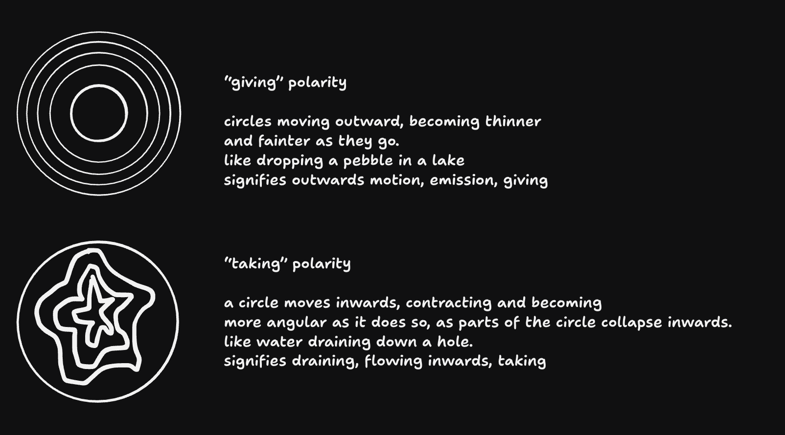
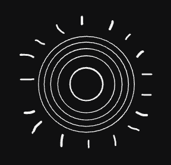

Fount and drain
netties, 15–16 October 2026. An experiment in showing a port's direction on its own, with no port or wire to point an arrow along: a fount for a port that gives, a drain for one that takes. Not used in the end; kept for reference.
The idea
The user's drawings. Giving: "circles moving outward, becoming thinner and fainter as they go. Like dropping a pebble in a lake." Taking: "a circle moves inwards, contracting and becoming more angular as it does so, as parts of the circle collapse inwards. Like water draining down a hole." The hope was that seeing these wherever directions came up would make them familiar by the time they mattered.


How it went
-
Three rings each, a fixed rim for the drain with rings turning as they shrank. Too small to
read: "they just kinda look like circles". The panel re-rendered on every pointer move,
restarting the animation, so the fount looked still; fixed by putting every icon on one clock.
(
cfb918a) -
The drain's rim itself creasing inward, without turning (that "becomes a pretty flower ...
doesn't illustrate draining"). Made lopsided to match the drawing, which wasn't wanted: the
drawing was only hand-drawn. (
4161dcb) -
Symmetric creases, valleys falling faster than tips; each new rim fading in slowly, like a
Shepard tone, so it feels ever-falling rather than pulsing outwards. Rays on the fount, so it
reads as sending out even when still. But the faint rim never looked like a circle, the star
faded out too visibly, and the fount became a sun with its moving rings too small to see.
(
270262e) -
This page: the drain comes in as a full circle and creases only once inside, and thins and
shrinks to nothing instead of fading; the fount's rings use the whole icon while moving, with
rays only when still. (
c9946a7)
Each round's code: git show <commit>:src/ui/PolarityIcon.tsx (the last:
git show c9946a7:src/dev/fountDrain.tsx). The app went with the badge's old port-and-arrow, the head
moving out of the port for giving and in towards it for taking: clearer at icon size and less
attention-grabbing. The user: "a fun but failed experiment".